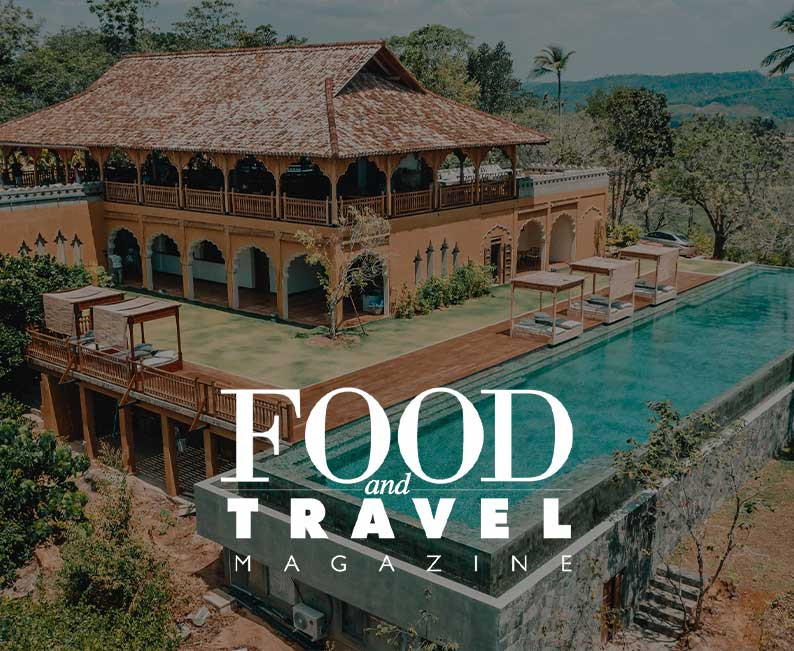

|  |
Malabar Hill is a nature
focused luxury resort set in1
the heart of South West Sri
Lanka. The hilltop setting,
intentional design and world
class service make this the chic
Sri Lankan destination for the
discerning traveller.
|
Experiences By Malabar Hill
|
WHALE WATCHING TOURS
Available between December and April we offer two options to see these amazing creatures. Nowhere
in
the World is possible to see blue whales so close to the shore. You will also be able to see spinner
and bottlenose dolphins in their natural habitat.
Sailing
Discover the joy of sailing and experience the most beautiful scenery the South Coast has to offer
from
the Sea. Swim in clear waters, snorkel reefs, and enjoy the fun of stand up paddle boarding. We can
organise private or shared tours during morning or sunset times. Another magical way of experience
the
world’s largest Mammal, the Blue Whale, along with many other species. Unforgettable sunrises and
sunset
are a highlight of our cruises.
|
|
GALLE FORT GUIDED TOUR
The unique Fort at Galle offer a fascinating walk, dating to the time of the Dutch occupation this
UNESCO Heritage protected site has a very cosmopolitan atmosphere with its mix of architecture,
narrow lanes and vast granite ramparts. Visit with your guide historic points of interest like
ancient churches and museums, walk the Fort’s rampart at sunset, visit boutique clothing stores,
jewellery shops and all manner of cafes tucked away. Soak up the vibe of one of the most unique
places in the world.
|
|
UNIQUE CINNAMON TOUR AT TOP HOUSE
The Top House cinnamon tour is a unique cinnamon plantation experience. The resident British owners
give private tours of their working estate, just across the valley from Malabar Hill. They explain
the history of Ceylon cinnamon and demonstrate cinnamon peeling and the making of artisan cinnamon
leaf oil. This is followed by a visit up to the plantation house with tea or lunch hosted by the
owners. The experience lasts about two hours and involves a short ride by tractor.
|
|
|